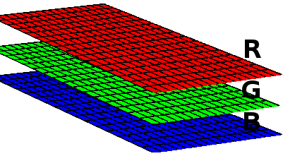

In this article I explain how to read and create / write satellites images and geographic informations images in .TIF format with the Gdal library in C#.
Firstly, we have to import Gdal to the project: in Visual Studio, right click on project, go to "Manage NuGet packages", type "Gdal" on search field, select Gdal (1.11.1 is the last version available at the time of writing) and install it. Also select and install Gdal.Native (the project compile without it but it does not execute correctly). The "GdalConfiguration.cs" class is created automatically. It is used before start the conversion method.
To import Gdal in your class, use:
using OSGeo.GDAL;
Before use the Gdal classes, we need to configure it. You just need to call ConfigureGdal method of the class GdalConfiguration.cs. You can call it, for example, in class constructor.
public WhiteBalance() {
GdalConfiguration.ConfigureGdal();
}
To open an image that already exists, use the following code:
Dataset image = Gdal.Open(imagePath, Access.GA_ReadOnly);
It is best to use the using instruction block, to close the object properly. To create a new image, you have to provide its size, number of bands (3 for RGB) and the data type of each pixel (byte, int16, int32, etc).
Dataset outImage = Gdal.GetDriverByName("GTiff").Create(outImagePath, width, height, 3, DataType.GDT_Byte, null)
An image is like a three-dimensional matrix. Each band is a matrix and it represents a color. A RGB image has 3 bands. If it has an alpha band, for example, it has 4 bands.
Each band is accessed with the following code:
Band outRedBand = outImage.GetRasterBand(1);
We can access each matrix of a band. In this example, we access each matrix row, copying the dada to an previously declared array (int[] red) e then, we access each pixel:
for(int h = 0; h < height; h++) { int[] red = new int[width]; redBand.ReadRaster(0, h, width, 1, red, width, 1, 0, 0); for(int w = 0; w < width; w++) { red[w] = red[w] + 1; // any process with each pixel } }
To write the image data, we pass the array of pixels to the method:
outRedBand.WriteRaster(0, h, width, 1, red, width, 1, 0, 0);
If you want to read or write more data at once, and not row by row, edit the size and position in the method. For example, to read and write all data of matrix at once:
int[] red = new int[width * height]; redBand.ReadRaster(0, 0, width, height, red, width, height, 0, 0); outRedBand.WriteRaster(0, 0, width, height, outRed, width, height, 0, 0);
In the end, save the writing data:
outImage.FlushCache();
The complete code to read, edit and write .TIF images with Gdal:
new ReadWrite().ReadAndWriteImage(@"C:\development\input-image.tif", @"C:\development\output-image.tif");
using OSGeo.GDAL; using System; namespace Adadev.GdalModule { public class ReadWrite { public ReadWrite() { GdalConfiguration.ConfigureGdal(); } public void ReadAndWriteImage(string imagePath, string outImagePath) { using(Dataset image = Gdal.Open(imagePath, Access.GA_ReadOnly)) { Band redBand = GetBand(image, ColorInterp.GCI_RedBand); Band greenBand = GetBand(image, ColorInterp.GCI_GreenBand); Band blueBand = GetBand(image, ColorInterp.GCI_BlueBand); Band alphaBand = GetBand(image, ColorInterp.GCI_AlphaBand); if(redBand == null || greenBand == null || blueBand == null || alphaBand == null) { throw new NullReferenceException("One or more bands are not available."); } int width = redBand.XSize; int height = redBand.YSize; using(Dataset outImage = Gdal.GetDriverByName("GTiff").Create(outImagePath, width, height, 4, redBand.DataType, null)) { // copy the projection and geographic informations of image double[] geoTransformerData = new double[6]; image.GetGeoTransform(geoTransformerData); outImage.SetGeoTransform(geoTransformerData); outImage.SetProjection(image.GetProjection()); Band outRedBand = outImage.GetRasterBand(1); Band outGreenBand = outImage.GetRasterBand(2); Band outBlueBand = outImage.GetRasterBand(3); Band outAlphaBand = outImage.GetRasterBand(4); for(int h = 0; h < height; h++) { int[] red = new int[width]; int[] green = new int[width]; int[] blue = new int[width]; int[] alpha = new int[width]; // copy each matrix row of image to the above arrays redBand.ReadRaster(0, h, width, 1, red, width, 1, 0, 0); greenBand.ReadRaster(0, h, width, 1, green, width, 1, 0, 0); blueBand.ReadRaster(0, h, width, 1, blue, width, 1, 0, 0); alphaBand.ReadRaster(0, h, width, 1, alpha, width, 1, 0, 0); for(int w = 0; w < width; w++) { red[w] = red[w] + 1; // any process with each pixel green[w] = green[w] + 1; blue[w] = blue[w] + 1; alpha[w] = alpha[w] + 1; } // write image outRedBand.WriteRaster(0, h, width, 1, red, width, 1, 0, 0); outGreenBand.WriteRaster(0, h, width, 1, green, width, 1, 0, 0); outBlueBand.WriteRaster(0, h, width, 1, blue, width, 1, 0, 0); outAlphaBand.WriteRaster(0, h, width, 1, alpha, width, 1, 0, 0); } outImage.FlushCache(); } } } /** * Returns the band for an color (red, green, blue or alpha) * The dataset should have 4 bands * */ public static Band GetBand(Dataset ImageDataSet, ColorInterp colorInterp) { if(colorInterp.Equals(ImageDataSet.GetRasterBand(1).GetRasterColorInterpretation())) { return ImageDataSet.GetRasterBand(1); } else if(colorInterp.Equals(ImageDataSet.GetRasterBand(2).GetRasterColorInterpretation())) { return ImageDataSet.GetRasterBand(2); } else if(colorInterp.Equals(ImageDataSet.GetRasterBand(3).GetRasterColorInterpretation())) { return ImageDataSet.GetRasterBand(3); } else { return ImageDataSet.GetRasterBand(4); } } } }
You can download the complete code in our repository on Github.
White Balance Algorithm with Gdal in C#
Converting JSON to shapefile using Gdal in C#